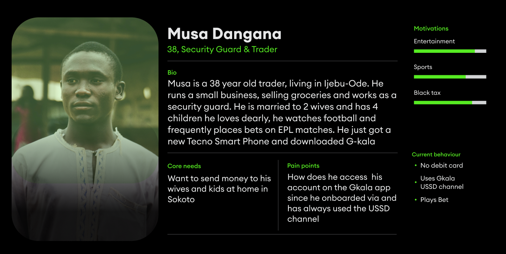
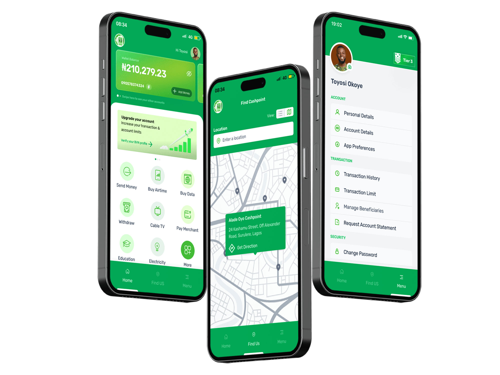
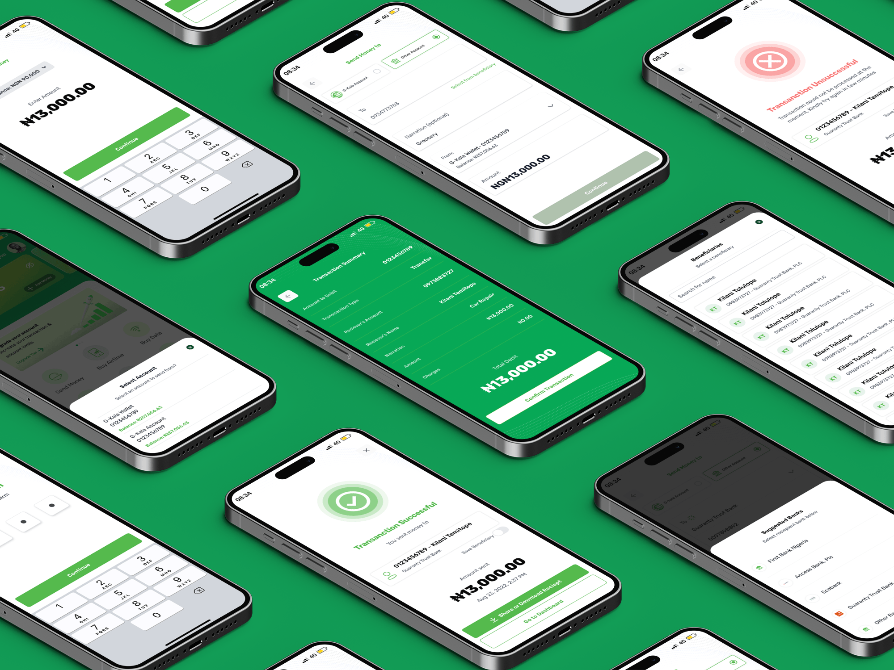
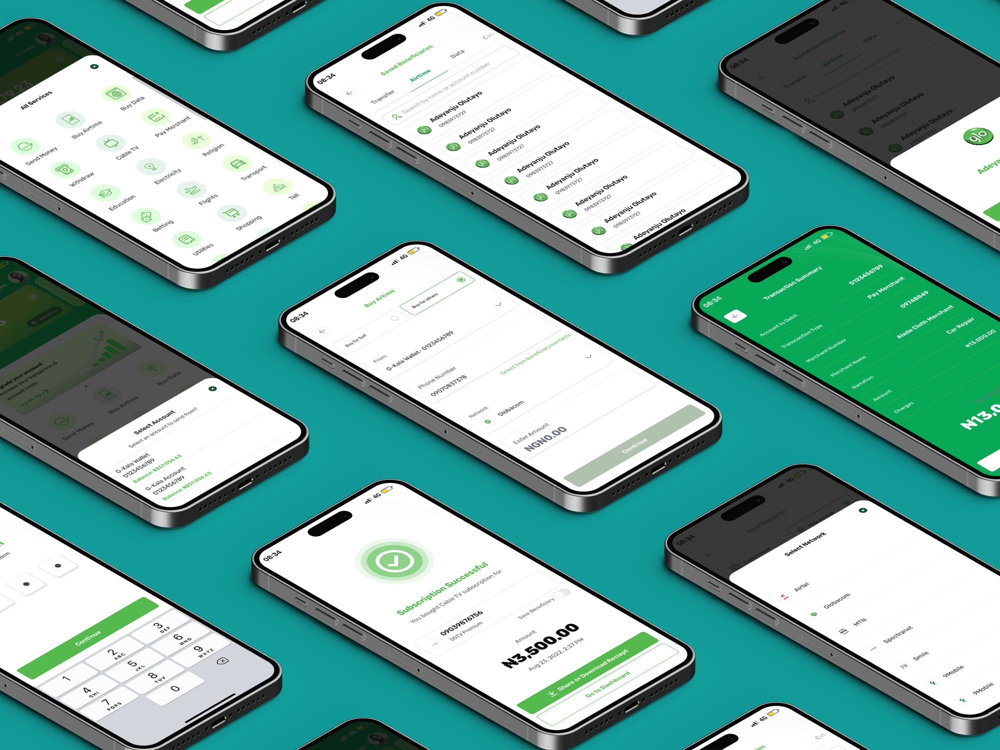

Money Master — banking Nigeria's underserved by mobile number alone.
Designed G-Kala, the personal banking app for Moneymaster PSB — a Glo-backed Payment Service Bank built to reach rural and underbanked Nigerians through their phone number alone.

In a bid to enhance financial inclusion, the Central Bank of Nigeria sanctioned three new Payment Service Banks in August 2020 to close gaps in banking access. Moneymaster PSB — a subsidiary of Glo, Nigeria's second-largest telecom — was among them, mandated to keep at least 25% of its physical presence (ATMs and POS) in rural areas.
Interswitch partnered with Moneymaster to build its financial infrastructure. I was the primary designer, leading personal and corporate internet banking across mobile and web.
The goal for G-Kala, the personal banking app: a bank manageable entirely through a registered Nigerian mobile number — leveraging NCC's directive linking numbers to NIN and BVN, and Moneymaster's access to Glo's NIN-linked subscriber base, to reach rural and underserved communities.
I built personas to ground the target audience — centered on users transitioning from USSD banking, often designed for feature phones, into confident smartphone users navigating a full digital banking experience for the first time.

Onboarding was streamlined to a Glo mobile number, or a BVN lookup for users on other networks — opening a full account in under 5 minutes.
The dashboard was designed around the most common daily transactions, with the account balance card kept front and center. Since Moneymaster has no physical branches, a "Find Us" feature helps users locate the nearest G-Kala agent for cash in/out.

Transfers to G-Kala accounts, other banks, or a phone number all follow the same streamlined flow — anticipating the recipient's bank so users skip hunting through a full list of every Nigerian bank, cutting steps versus the market standard.

Airtime, data, electricity, cable TV and more, settled in 3–4 taps, with saved beneficiaries for repeat payments.

We ran an unmoderated remote usability test across two core prototype flows to validate the design direction ahead of launch — measuring where users hesitated, misclicked, or dropped off entirely.
"Now that you have an account, log in and send money to a GTB account from your G-Kala wallet."
"You've decided to switch from your bank app to G-Kala. Sign up for a G-Kala account."
Once users had an account, the core banking flow was fast and intuitive — validating the design and pointing us squarely at sign-up as the next thing to fix.